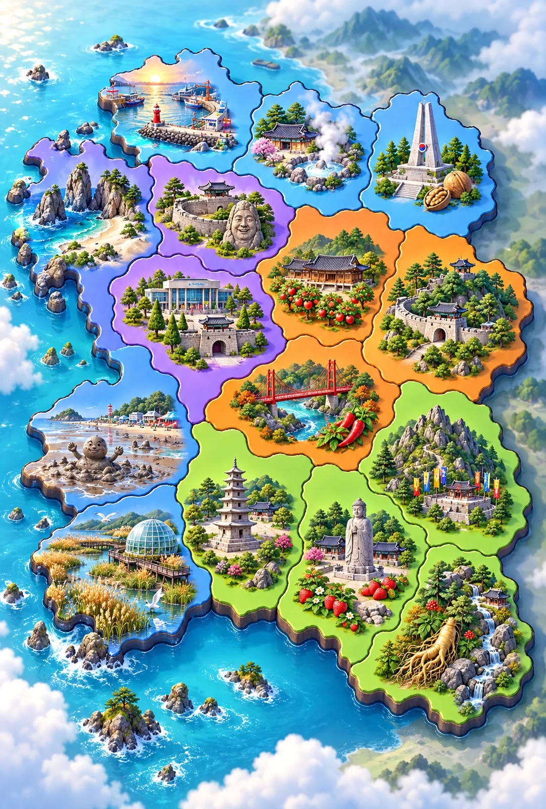

<!doctype html>
<html lang="ko"><meta charset="utf-8"><meta name="viewport" content="width=device-width,initial-scale=1">
<title>충남 수호대 · 15시군 그림관</title>
<style>
@font-face{font-family:Body;src:url(assets/fonts/NotoSansKR.woff2)}
@font-face{font-family:Game;src:url(assets/fonts/BlackHanSans-Regular.woff2)}
*{box-sizing:border-box}body{margin:0;color:#f8f8ff;background:radial-gradient(ellipse at top,#275b87,#171b3f 75%);font:17px/1.6 Body,system-ui,sans-serif}main{max-width:1100px;margin:auto;padding:20px}h1,h2,h3,button,.back{font-family:Game,system-ui,sans-serif;font-weight:900;line-height:1.4}h1{font-size:clamp(25px,5vw,42px);text-shadow:0 3px #11132e;margin:16px 0 6px}p{margin:6px 0 18px}.back{display:inline-block;color:#182344;background:linear-gradient(#fff2ad,#ffcb5b);padding:10px 18px;border:2px solid #182344;border-radius:16px;text-decoration:none;box-shadow:0 5px #10172f}.tabs{display:flex;flex-wrap:wrap;gap:10px;margin:22px 0;position:sticky;top:0;padding:12px 0;background:#1b244bee;z-index:2}button{cursor:pointer;min-height:46px;font-size:17px;color:#fff;background:linear-gradient(#4f84b8,#27426b);border:2px solid #99c8ef;border-radius:15px;padding:10px 16px;box-shadow:0 4px #0d1736}button[aria-pressed=true]{background:linear-gradient(#fff09c,#ffba45);color:#172344;border-color:#ffed9a}button:focus-visible,a:focus-visible{outline:4px solid #77fff0;outline-offset:3px}.map{position:relative;max-width:560px;margin:auto;border:3px solid #9be8ef;border-radius:26px;overflow:hidden;box-shadow:0 12px 0 #101a36}.map>img{display:block;width:100%}.map button{position:absolute;transform:translate(-50%,-50%);padding:4px 9px;font-size:clamp(12px,2.3vw,17px);min-height:36px;white-space:nowrap;border-radius:12px}.map-note{font-size:14px;color:#d0e7f3;text-align:center;margin:12px}.grid{display:grid;grid-template-columns:repeat(auto-fit,minmax(235px,1fr));gap:18px}.panel{background:linear-gradient(145deg,#edfaff,#bddef0);border:3px solid #7eb2d1;box-shadow:0 7px #101b39;border-radius:24px;padding:14px;color:#182344;overflow:hidden}.panel h2,.panel h3{text-align:center;margin:5px 0 12px}.pair{display:grid;grid-template-columns:1fr 1fr;gap:10px}.pair figure{margin:0;text-align:center;font-weight:800;font-size:14px}.pair img{display:block;width:100%;aspect-ratio:1;object-fit:contain;background:radial-gradient(#fffef1,#c4e6ef);border-radius:20px}.landmark,.sprite{aspect-ratio:1;max-width:230px;margin:auto;background-repeat:no-repeat}.bg{width:100%;max-height:550px;object-fit:cover;object-position:top;border-radius:15px;display:block}.region-detail{margin:22px auto;max-width:700px;scroll-margin-top:100px}.region-detail .pair{margin:12px 0}.region-detail .landmark{width:180px}.empty{color:#e4f6ff}footer{margin:30px 0 10px;font-size:14px;color:#c9dfef}section[hidden]{display:none}@media(max-width:500px){main{padding:12px}.grid{grid-template-columns:1fr 1fr;gap:10px}.panel{padding:8px;border-radius:18px}.panel h3{font-size:17px}.pair{gap:4px}.tabs{gap:6px}.tabs button{font-size:15px;padding:9px 12px}}@media(prefers-reduced-motion:no-preference){.panel{animation:appear .25s ease both}@keyframes appear{from{opacity:0;transform:translateY(8px)}}}
</style>
<main><a class="back" href="./">← 게임으로</a><a class="back" href="boss-projectiles.html" style="margin-left:12px">보스 주제 탄환 25종 →</a><h1>충남 15시군 그림관</h1><p>우리 고장의 풍경과, 정화되어 친구가 된 보스를 만나 보세요.</p>
<nav class="tabs" aria-label="그림 종류"><button data-tab="regions" aria-pressed="true">우리 고장</button><button data-tab="bosses" aria-pressed="false">보스와 정화</button><button data-tab="enemies" aria-pressed="false">작은 몬스터</button><button data-tab="concepts" aria-pressed="false">SW·AI</button></nav>
<section id="regions"><div class="map" id="map"></div><p class="map-note">고장 이름을 누르면 그림이 나와요. 위치와 경계는 선택 화면을 위한 모식도예요.</p><div class="panel region-detail" id="detail"></div></section>
<section id="bosses" hidden><div class="grid" id="boss-grid"></div></section><section id="enemies" hidden><div class="grid" id="enemy-grid"></div></section><section id="concepts" hidden><div class="grid" id="concept-grid"></div></section>
<footer>충남 수호대 전용 AI 생성 그림 · 게임의 15시군 진행 기능은 별도 확장 작업입니다.</footer></main>
<script type="module">
import {REGION_ART,EXPANSION_BOSSES,EXPANSION_ENEMIES,CONCEPT_ART,MAP_POINTS} from './data/expansion-art.js';
const image=(name,alt='',lazy=true)=>``;
const sprite=(sheet,i,cols,rows,cls='sprite')=>`<div class="${cls}" role="img" style="background-image:url(assets/img/${sheet}.webp);background-size:${cols*100}% ${rows*100}%;background-position:${i%cols/(cols-1)*100}% ${Math.floor(i/cols)/(rows-1)*100}%"></div>`;
const file=id=>'boss_'+(id==='aicore'?'ai_core':id);
function pair(id){return `<div class="pair"><figure>${image(file(id),'정화 전')}<figcaption>정화 전</figcaption></figure><figure>${image(file(id)+'_cleansed','정화 후')}<figcaption>정화 후</figcaption></figure></div>`;}
const map=document.querySelector('#map'),detail=document.querySelector('#detail');
for(const [i,r] of REGION_ART.entries()){const b=document.createElement('button');b.textContent=r.name;b.style.left=MAP_POINTS[i][0]*100+'%';b.style.top=MAP_POINTS[i][1]*100+'%';b.setAttribute('aria-pressed','false');b.addEventListener('click',()=>select(i,true));map.append(b);}
function select(i,scroll=false){const r=REGION_ART[i];map.querySelectorAll('button').forEach((b,j)=>b.setAttribute('aria-pressed',String(i===j)));detail.innerHTML=`<h2>${r.name}</h2>${sprite('region_landmarks_15_sheet',i,5,3,'landmark')}${pair(r.boss)}${r.mid?`<h3>중간 보스</h3>${pair(r.mid)}`:''}<h3>우리 고장 풍경</h3>${image(r.bg,r.name+' 배경',false).replace('`<article class="panel"><h3>${name}</h3>${pair(id)}</article>`).join('');
if(tab==='enemies'){const labels=['비번 자물쇠 벌레','필터 반딧불','매운말 고추벌레','복제 씨앗','가짜 프로필 가면','블루라이트 박쥐','찰칵 집게','추천 거품 물고기','폐배터리 소라','흑역사 애벌레'];document.querySelector('#enemy-grid').innerHTML=EXPANSION_ENEMIES.map((id,i)=>`<article class="panel"><h3>${labels[i]}</h3>${sprite('enemy_region15_sheet',i,5,2)}</article>`).join('');}
if(tab==='concepts')document.querySelector('#concept-grid').innerHTML=CONCEPT_ART.map(([id,name],i)=>`<article class="panel"><h3>${name}</h3>${sprite('concept_cards_sheet',i,3,2)}</article>`).join('');}
document.querySelectorAll('[data-tab]').forEach(b=>b.addEventListener('click',()=>{const tab=b.dataset.tab;build(tab);document.querySelectorAll('main>section').forEach(s=>s.hidden=s.id!==tab);document.querySelectorAll('[data-tab]').forEach(x=>x.setAttribute('aria-pressed',String(x===b)));}));
</script></html>
